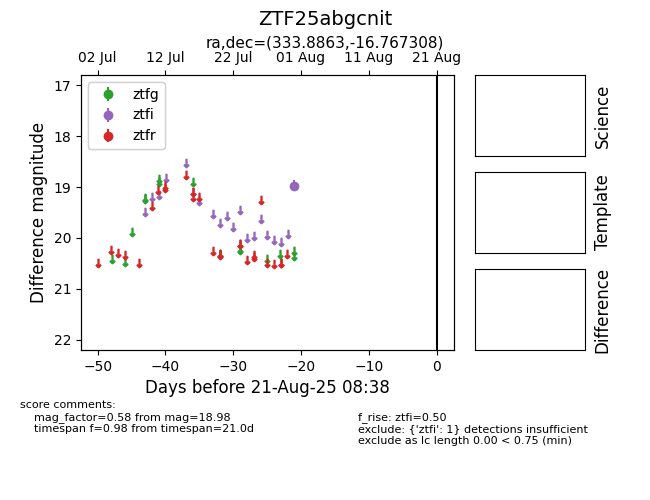

Target ZTF25abgcnit at 2025-08-21 08:38, see:
FINK: fink-portal.org/ZTF25abgcnit
Lasair: lasair-ztf.lsst.ac.uk/objects/ZTF25abgcnit
ALeRCE: alerce.online/object/ZTF25abgcnit
alt names
ZTF25abgcnit (ztf,alerce)
coordinates:
equatorial (ra, dec) = (333.8863,-16.76731)
galactic (l, b) = (40.7493,-52.56468)
photometry
last ztfi=18.98
1 ztfi detections
